Core · Video walkthrough
Create personnel roles, set requirements and verify member assignments
Create a fictional operational role, save one certification requirement, compare unsaved AND/OR alternatives, preserve a member’s existing role while adding the new one, and verify stored membership and software eligibility.
Before you begin
- Use a fictional practice department with existing authorized personnel-role and certification setup/view permissions.
- Prepare a distinct fictional Person certification type and an already reviewed record for the intended fictional member.
- Record current member roles/group/admin/status settings; retain them when adding the single exercise role.
Chapters
- Distinguish roster roles, staffing and status
- Give the role a clear operational purpose
- Save the role and verify the empty starting point
- Save one deliberate certification requirement
- Check the referenced type and code lock
- Compare independent rules and alternatives without saving
- Open the member editor and preserve the baseline
- Prepare the additional role without replacing Officer
- Save the intended role set with profile settings preserved
- Confirm the stored selection and baseline flags
- Check the role’s actual member and software eligibility
- Apply the same careful role workflow across sectors
Watch the walkthrough
Step 1
Distinguish roster roles, staffing and status
Personnel shows a member’s roles separately from staffing, status, and administrative state. In our fictional Chicago Fire department, Casey begins with Officer, On Shift, Standing By, and Admin. Choose Manage Roles to inspect the catalog. The page lists each role’s description and member count. It also explains how role order chooses an available custom icon for a person’s map pin. We will leave the original six roles and their order unchanged, and add one clearly marked coordination exercise.

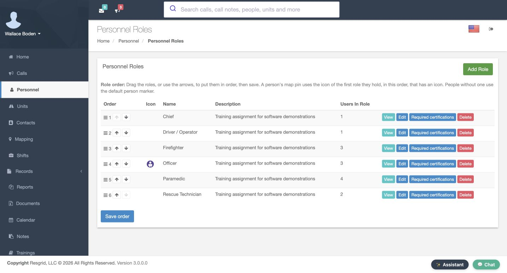
Practice
Identify Casey’s current role, staffing, status and state before opening Manage Roles.
Step 2
Give the role a clear operational purpose
Choose Add Role. Enter Training Only, Community Response Navigator as the Name. Use the Description to explain the fictional community paramedicine and mental health coordination exercise. Our description explicitly separates software training from professional qualification and system administration privileges. Custom icon is optional and remains empty. A useful role name tells another administrator what the role is for; its description explains the intended scope before anyone is assigned to it.
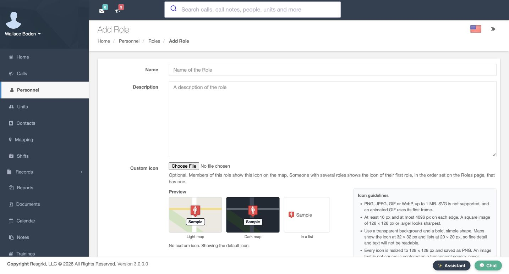
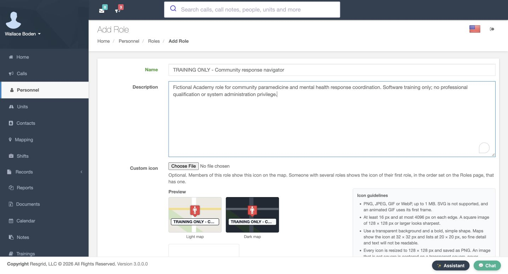
Practice
Prepare one unique fictional role name and a specific coordination description.
Step 3
Save the role and verify the empty starting point
The lower form previews the default icon on light and dark backgrounds and in a list. No custom file has been selected. Use Save, then find the new role at the end of the catalog. Users In Role is zero, and the original six rows retain their order and counts. Choose View on the new row to read its stored name and full description. Creating the role has given us a saved definition, but has not yet assigned a member.
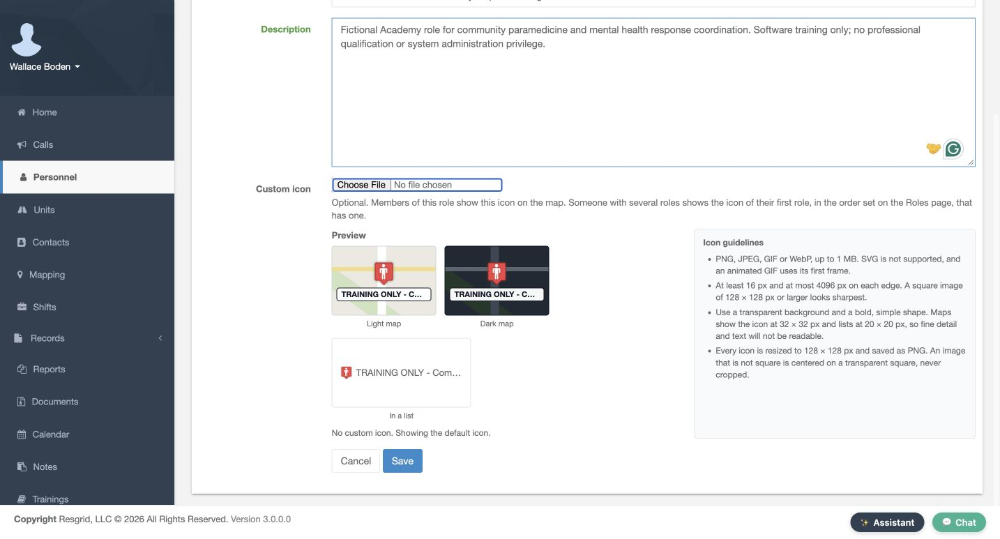
Practice
Save your own role and verify its name, description and zero-member count.
Step 4
Save one deliberate certification requirement
From the new role’s row, open Required certifications. The notice says enforcement is Off, and Member eligibility says the role has no members. Add requirement creates a row. Select the fictional record-review type, check Mandatory, leave Any-of group blank, leave Allow trainee clear, and enter seven for Grace override. Save, then reopen the page and read the same single row. The seven-day setting concerns the removal grace calculation if enforcement applies; it does not change a certification record’s expiry.
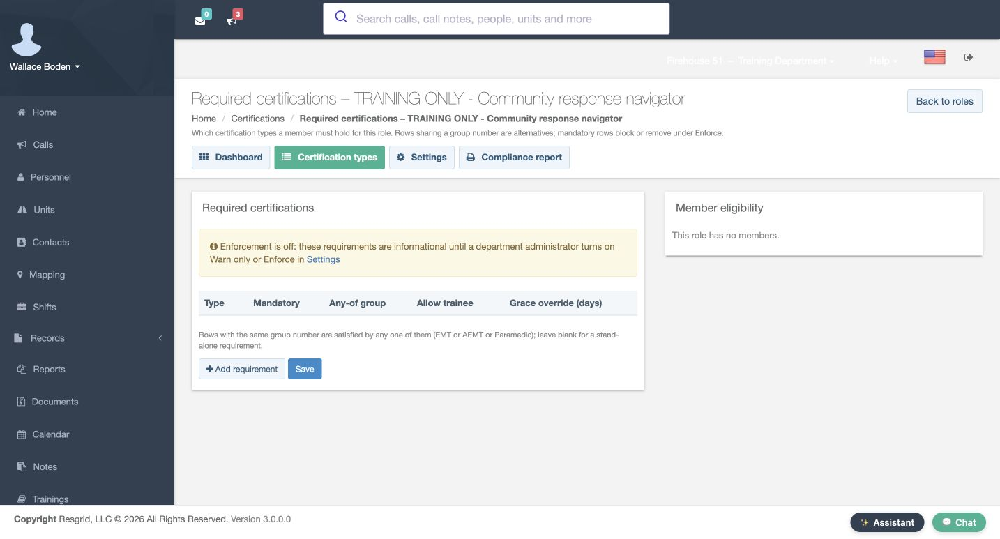
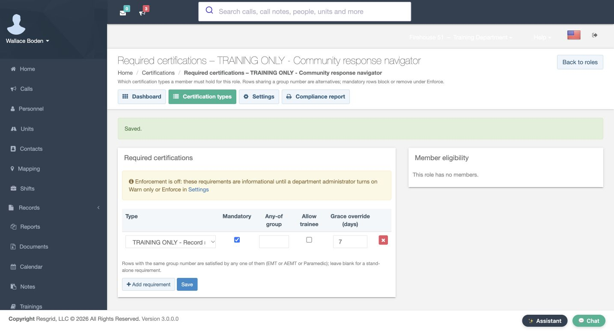
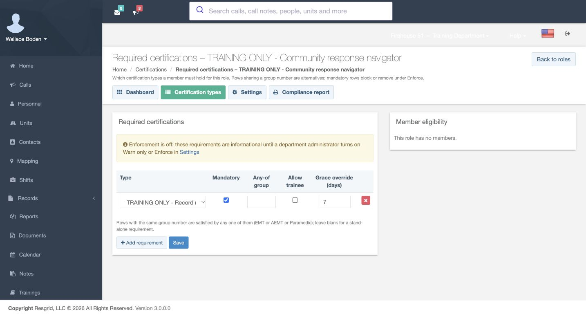
Practice
Save only the new role’s one fictional requirement and confirm the reopened settings.
Step 5
Check the referenced type and code lock
Choose Certification types to verify the full identity behind the narrow requirement selector. The training review row shows its complete code, one existing record, and now one requirement. Open its Edit control. Code is read-only, and the help explains that a role requirement references this type. Applies to remains locked at Person because a record already uses it. We are inspecting these fields only. Keep the existing record and type settings intact.
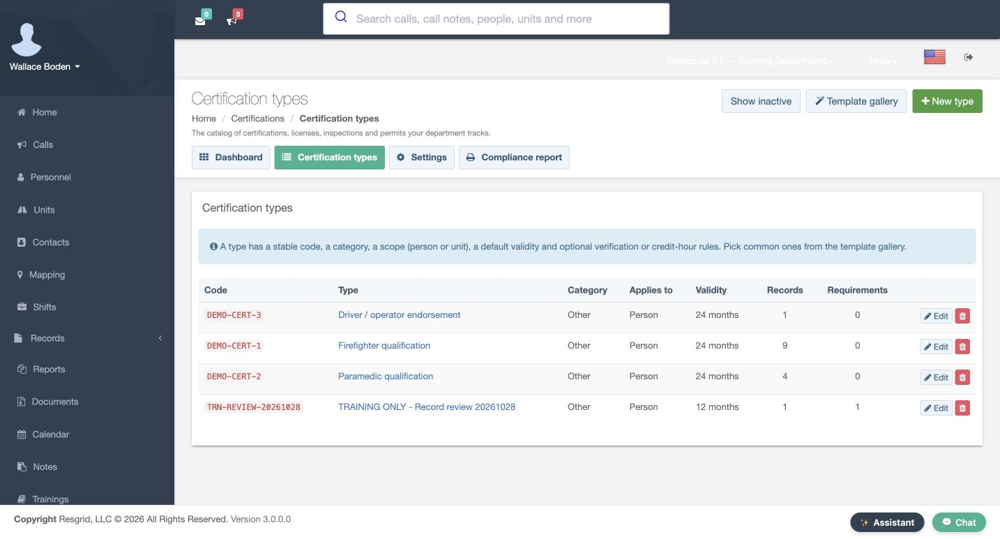
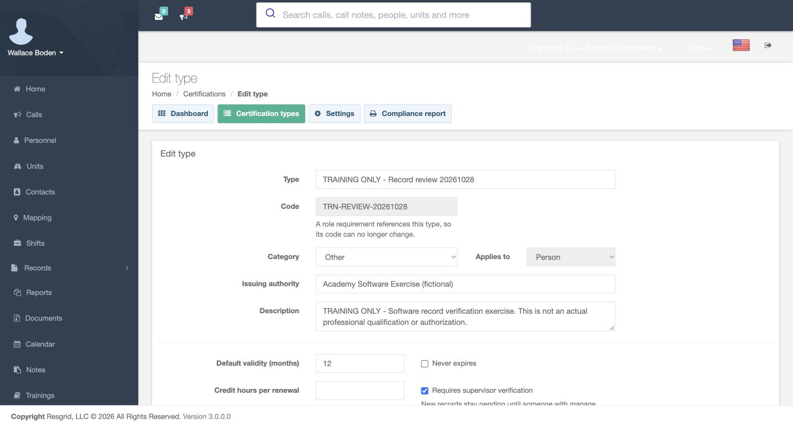
Practice
Compare the full type code and requirement count, then inspect the locked fields without saving.
Step 6
Compare independent rules and alternatives without saving
Back on the role’s requirements page, add a second, distinct type for an unsaved comparison. With both Mandatory boxes checked and both group fields blank, the rows express separate requirements: both would be needed. Give both rows group number one, and they become alternatives: either could satisfy that group. This is a form preview, so do not Save. Reloading restores the original single row, blank group, and seven-day override. Saving would replace the stored requirement set; the discarded preview changes none of it.
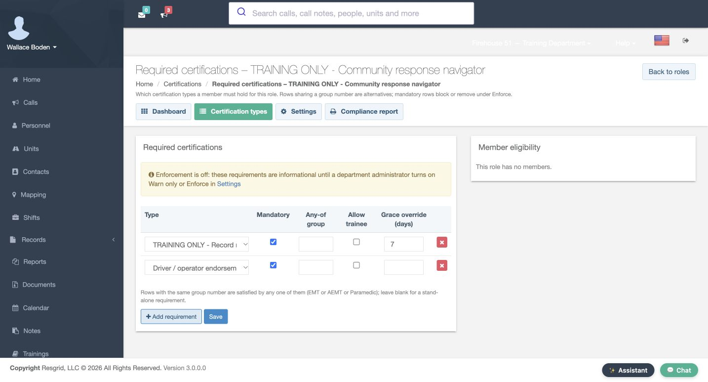
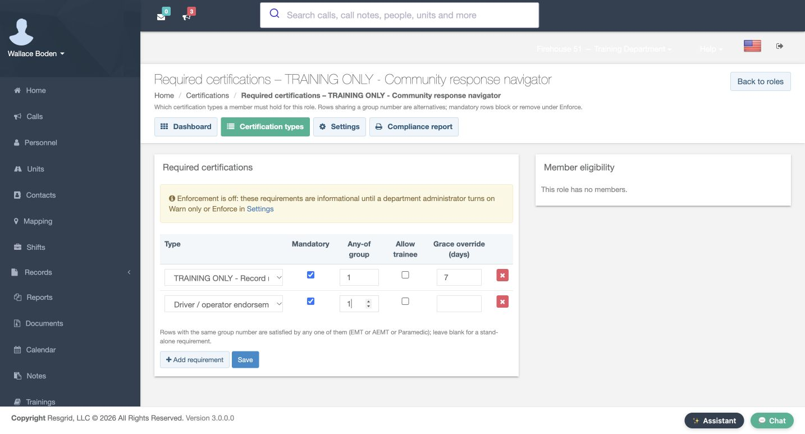
Practice
Preview two distinct rows with blank groups and matching groups, then discard them and verify the saved single rule.
Step 7
Open the member editor and preserve the baseline
To assign the role, return to Personnel and use Edit on Casey’s row. In the profile’s Roles field, wait for the existing Officer selection to load. It must remain selected when adding another role. Group is Truck 81 and Is Group Admin is already checked in this fictional account; leave both unchanged. This page contains other profile settings, so keep the exercise focused on the intended additional role rather than changing membership, contact, or administrative options.
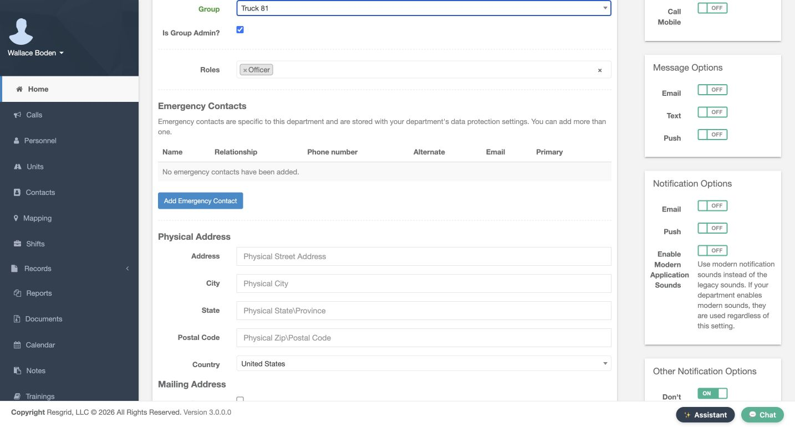
Practice
Open the intended fictional member and confirm the existing Officer selection and group settings.
Step 8
Prepare the additional role without replacing Officer
Use the profile’s Roles selector for the additional assignment. Community is entered in the lookup, while Officer remains selected. The prepared selection then contains two complete chips: Officer and the new Training Only, Community Response Navigator role. Read both names before saving. This control submits the whole selected role set, so an existing role must remain present if you intend to preserve it. Adding the new chip is preparation; we still need a saved readback.
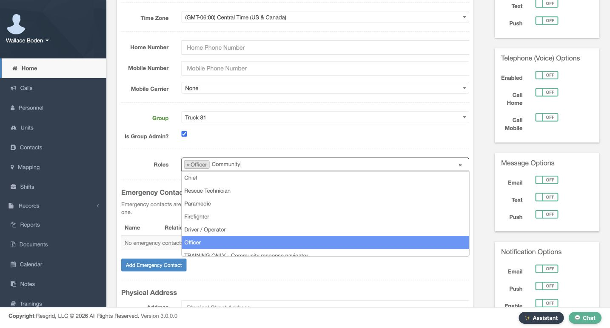
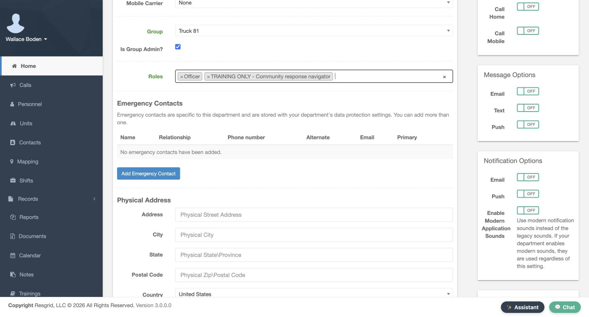
Practice
Prepare exactly Officer plus your new role and verify both complete selected names.
Step 9
Save the intended role set with profile settings preserved
Before saving, compare the unchanged profile controls. Department Admin is already selected, while Disable User and Hide User are clear. We leave them that way. Use the normal Save once. Back in Personnel, search for Matthew Casey. His row now lists Officer and the new coordination role together. Staffing remains On Shift, status remains Standing By, and administrative state still reads Admin. The result is an additional operational role on the same member, not a new staffing or status selection.
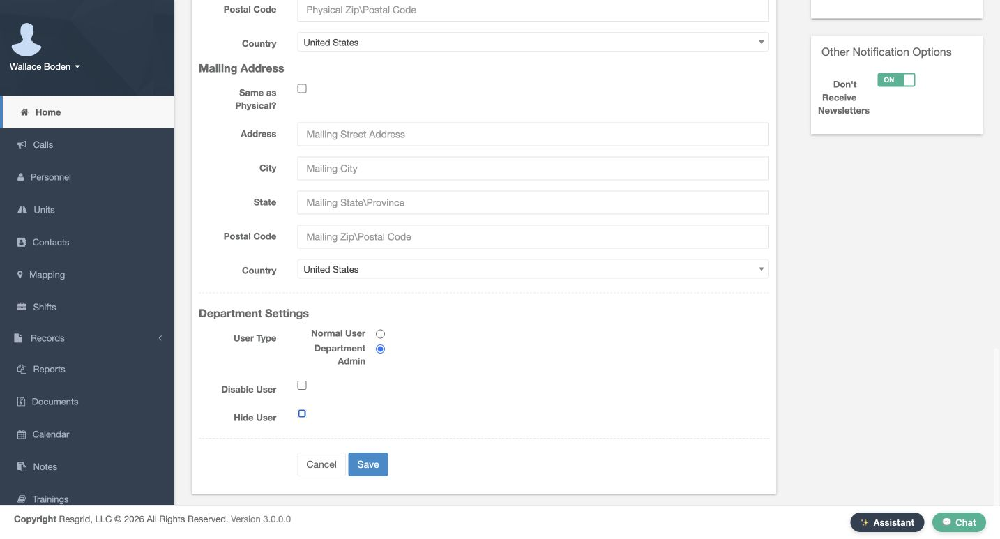
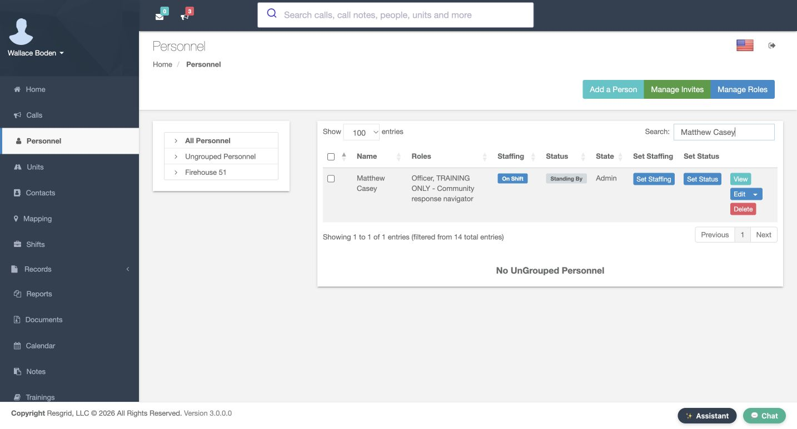
Practice
Save once and verify the two roster roles alongside the unchanged staffing, status and state.
Step 10
Confirm the stored selection and baseline flags
Use the member’s Edit control again to check persistence. Both role chips are present in the fresh profile. Truck 81 remains selected and Is Group Admin remains checked. Farther down, Department Admin is still selected, while Disable User and Hide User remain clear. This second visit is read-only. Verify the particular fields involved in your exercise instead of assuming that a typed or selected value was stored. Keep unrelated profile and permission choices unchanged.
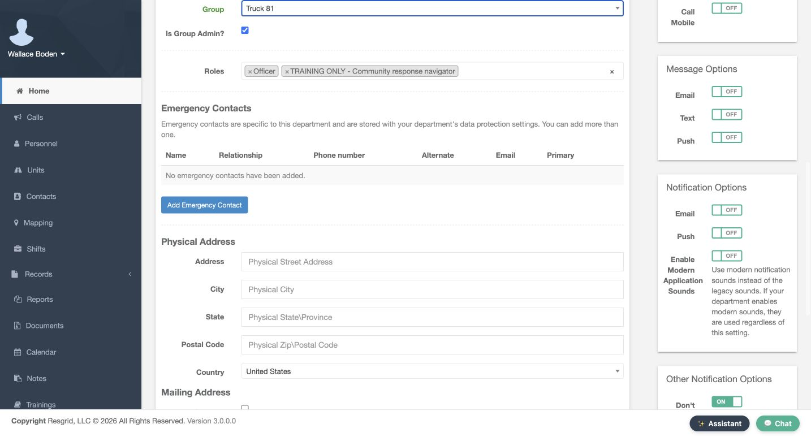
Practice
Reopen the member and compare both role chips and the visible group and administrative flags.
Step 11
Check the role’s actual member and software eligibility
Return through Manage Roles. The new role now has one member. Choose its View control to see Casey listed under the stored description. Open Required certifications from that role’s row to inspect Member eligibility. Casey is marked Qualified for this single fictional software rule. The Off notice remains visible: this result does not demonstrate enforcement blocking or removal. Read the rule, the member, and the software result together, and keep professional authorization decisions outside this training exercise.
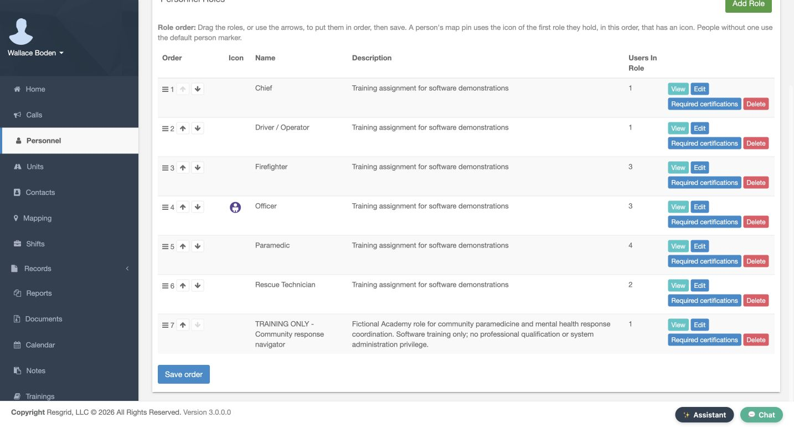
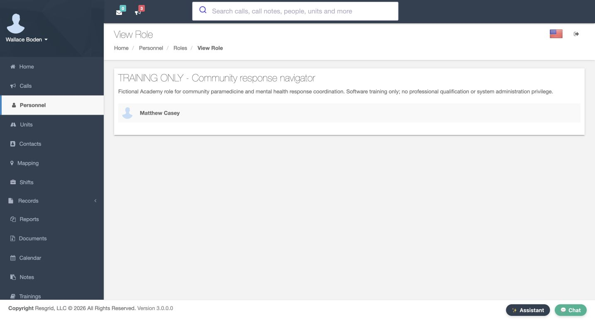
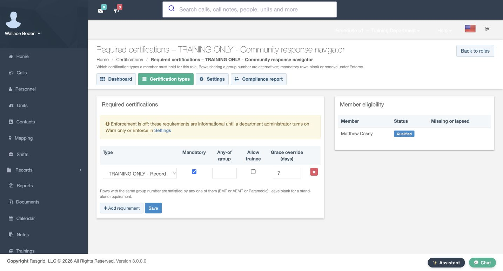
Practice
Cross-check the role’s member count, Casey’s membership and the single-rule software result.
Step 12
Apply the same careful role workflow across sectors
Chicago Fire can use this workflow to describe an exercise coordination role. Community care and mental health teams can organize operational responsibilities without patient detail. Search and rescue can distinguish search and support roles; security teams can define site responsibilities; wildland teams can organize seasonal coordination; and industrial response teams can separate staff functions from equipment inspections. In each setting, use clear descriptions, deliberate requirements, and verified membership. Preserve existing assignments and administrative settings, and check saved results before relying on them.
Practice
Define one fictional role suited to your sector and identify its intended requirement and membership checks.
Examples for your department
- Fire / EMS
- Describe an exercise coordination role and verify its saved requirements/membership.
- Community response
- Organize operational coordination without patient details or a claim of clinical authorization.
- Search and rescue
- Separate search/support responsibilities and preserve existing assignments.
- Security
- Define site responsibilities while keeping administrative permission choices explicit and unchanged.
- Wildland
- Maintain seasonal coordination roles with deliberate membership checks.
- Industrial
- Distinguish staff functions from equipment inspections and verify the saved role set.
Transcript
Download transcriptRead the complete transcript
Create personnel roles, set requirements and verify member assignments Audience: department administrators, personnel coordinators Distinguish roster roles, staffing and status Personnel shows a member’s roles separately from staffing, status, and administrative state. In our fictional Chicago Fire department, Casey begins with Officer, On Shift, Standing By, and Admin. Choose Manage Roles to inspect the catalog. The page lists each role’s description and member count. It also explains how role order chooses an available custom icon for a person’s map pin. We will leave the original six roles and their order unchanged, and add one clearly marked coordination exercise. Practice: Identify Casey’s current role, staffing, status and state before opening Manage Roles. Give the role a clear operational purpose Choose Add Role. Enter Training Only, Community Response Navigator as the Name. Use the Description to explain the fictional community paramedicine and mental health coordination exercise. Our description explicitly separates software training from professional qualification and system administration privileges. Custom icon is optional and remains empty. A useful role name tells another administrator what the role is for; its description explains the intended scope before anyone is assigned to it. Practice: Prepare one unique fictional role name and a specific coordination description. Save the role and verify the empty starting point The lower form previews the default icon on light and dark backgrounds and in a list. No custom file has been selected. Use Save, then find the new role at the end of the catalog. Users In Role is zero, and the original six rows retain their order and counts. Choose View on the new row to read its stored name and full description. Creating the role has given us a saved definition, but has not yet assigned a member. Practice: Save your own role and verify its name, description and zero-member count. Save one deliberate certification requirement From the new role’s row, open Required certifications. The notice says enforcement is Off, and Member eligibility says the role has no members. Add requirement creates a row. Select the fictional record-review type, check Mandatory, leave Any-of group blank, leave Allow trainee clear, and enter seven for Grace override. Save, then reopen the page and read the same single row. The seven-day setting concerns the removal grace calculation if enforcement applies; it does not change a certification record’s expiry. Practice: Save only the new role’s one fictional requirement and confirm the reopened settings. Check the referenced type and code lock Choose Certification types to verify the full identity behind the narrow requirement selector. The training review row shows its complete code, one existing record, and now one requirement. Open its Edit control. Code is read-only, and the help explains that a role requirement references this type. Applies to remains locked at Person because a record already uses it. We are inspecting these fields only. Keep the existing record and type settings intact. Practice: Compare the full type code and requirement count, then inspect the locked fields without saving. Compare independent rules and alternatives without saving Back on the role’s requirements page, add a second, distinct type for an unsaved comparison. With both Mandatory boxes checked and both group fields blank, the rows express separate requirements: both would be needed. Give both rows group number one, and they become alternatives: either could satisfy that group. This is a form preview, so do not Save. Reloading restores the original single row, blank group, and seven-day override. Saving would replace the stored requirement set; the discarded preview changes none of it. Practice: Preview two distinct rows with blank groups and matching groups, then discard them and verify the saved single rule. Open the member editor and preserve the baseline To assign the role, return to Personnel and use Edit on Casey’s row. In the profile’s Roles field, wait for the existing Officer selection to load. It must remain selected when adding another role. Group is Truck 81 and Is Group Admin is already checked in this fictional account; leave both unchanged. This page contains other profile settings, so keep the exercise focused on the intended additional role rather than changing membership, contact, or administrative options. Practice: Open the intended fictional member and confirm the existing Officer selection and group settings. Prepare the additional role without replacing Officer Use the profile’s Roles selector for the additional assignment. Community is entered in the lookup, while Officer remains selected. The prepared selection then contains two complete chips: Officer and the new Training Only, Community Response Navigator role. Read both names before saving. This control submits the whole selected role set, so an existing role must remain present if you intend to preserve it. Adding the new chip is preparation; we still need a saved readback. Practice: Prepare exactly Officer plus your new role and verify both complete selected names. Save the intended role set with profile settings preserved Before saving, compare the unchanged profile controls. Department Admin is already selected, while Disable User and Hide User are clear. We leave them that way. Use the normal Save once. Back in Personnel, search for Matthew Casey. His row now lists Officer and the new coordination role together. Staffing remains On Shift, status remains Standing By, and administrative state still reads Admin. The result is an additional operational role on the same member, not a new staffing or status selection. Practice: Save once and verify the two roster roles alongside the unchanged staffing, status and state. Confirm the stored selection and baseline flags Use the member’s Edit control again to check persistence. Both role chips are present in the fresh profile. Truck 81 remains selected and Is Group Admin remains checked. Farther down, Department Admin is still selected, while Disable User and Hide User remain clear. This second visit is read-only. Verify the particular fields involved in your exercise instead of assuming that a typed or selected value was stored. Keep unrelated profile and permission choices unchanged. Practice: Reopen the member and compare both role chips and the visible group and administrative flags. Check the role’s actual member and software eligibility Return through Manage Roles. The new role now has one member. Choose its View control to see Casey listed under the stored description. Open Required certifications from that role’s row to inspect Member eligibility. Casey is marked Qualified for this single fictional software rule. The Off notice remains visible: this result does not demonstrate enforcement blocking or removal. Read the rule, the member, and the software result together, and keep professional authorization decisions outside this training exercise. Practice: Cross-check the role’s member count, Casey’s membership and the single-rule software result. Apply the same careful role workflow across sectors Chicago Fire can use this workflow to describe an exercise coordination role. Community care and mental health teams can organize operational responsibilities without patient detail. Search and rescue can distinguish search and support roles; security teams can define site responsibilities; wildland teams can organize seasonal coordination; and industrial response teams can separate staff functions from equipment inspections. In each setting, use clear descriptions, deliberate requirements, and verified membership. Preserve existing assignments and administrative settings, and check saved results before relying on them. Practice: Define one fictional role suited to your sector and identify its intended requirement and membership checks. Examples for your department Fire / EMS: Describe an exercise coordination role and verify its saved requirements/membership. Community response: Organize operational coordination without patient details or a claim of clinical authorization. Search and rescue: Separate search/support responsibilities and preserve existing assignments. Security: Define site responsibilities while keeping administrative permission choices explicit and unchanged. Wildland: Maintain seasonal coordination roles with deliberate membership checks. Industrial: Distinguish staff functions from equipment inspections and verify the saved role set.